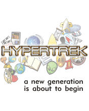

TREK NEWS |
HYPERTREK NEWS |
|
31.1.2006 La Deepcon 7/Italcon 32 si svolgerà dal 23 al 26 marzo 2006 a Fiuggi presso
l'Hotel Ambasciatori. Ospiti confermati Alexander Siddig,
Alexis Cruz,
Patricia Tallman, Jeffrey "Kosh" Willerth, Gerald "Mon Calamari" Home, Valerio Evangelisti, Chelsea Quinn Yarbro e Bernardo Lanzetti. 3.1.2006 È online il nuovo numero di Star Trek Italia Magazine. 24.12.2005 La Sticcon XX si terrà a Bellaria dall'11 al 14 maggio prossimi. Ospiti confermati Michael Dorn, Dominic Keating, Cirroc Lofton, Patrick Kilpatrick, James Horan, Malachi Throne e Richard Arnold. 20.12.2005 È uscito il numero 47 di Robot, una delle riviste storiche della fantascienza italiana. 20.11.2005 Dopo Braga, anche Rick Berman ha annunciato che lascerà Star Trek, probabilmente dopo la produzione dell'undicesimo film. 1.11.2005 Oggi è morto Michael Piller, stroncato da una lunga lotta contro il cancro. 17.10.2005 Dopo anni di convivenza, Delos e il Corriere della Fantascienza convergono da oggi in un unico sito, Fantascienza.com. 17.9.2005 HyperSG1 Ha rinnovato il layout del sito. 14.9.2005 Robert Wise, regista del primo film, è morto oggi per arresto cardiaco. 20.7.2005 James Doohan è morto oggi per complicazioni del morbo di Alzheimer. 17.7.2005 Nomination per i premi Emmy di quest'anno: Michael G. Westmore e il suo team nella categoria «Outstanding Prosthetic Makeup For A Series, Miniseries, Movie Or A Special (Prosthetic)» nell'episodio United, Michael Moore e il suo team nella categoria «Outstanding Hairstyling For A Series» nell'episodio In a Mirror, Darkly, Vince Deadrick Jr. nella categoria «Outstanding Stunt Coordination» negli episodi Borderland e Cold Station 12. |
 |